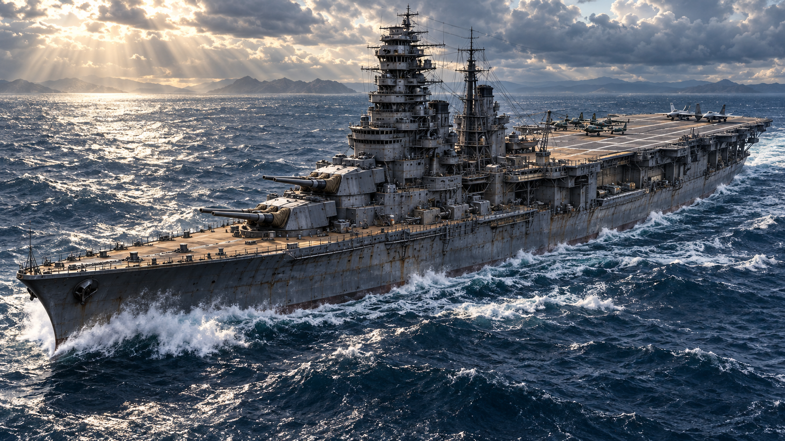

弩級戦艦朝日
一門の主砲から、海を切り開け。
新規開始：通常戦艦・主砲1門・航空隊なし
航空戦艦と航空隊は、海域を進めてから購入する強化です。
スマホは横向き推奨 · 音あり
PC：ドラッグ照準 / Space 発射 / F 斉射 / G 龍神砲
Q・E 旋回 / X 増速 / 高角砲は自動
V ソナー / H 対潜 / R 接触 / C 航空隊 / 1–4 主砲
一時停止
朝日、海域制圧。
上空から船体と損傷を確認しています
海域制圧
作戦海域・艦装整備
船体の損傷は次の出撃にも残ります。
赤いパーツは選択中の作戦に必須、金色は攻略におすすめです。主砲は1～4門。弾種・主砲機構・給弾を各門ごとに強化し、必須主砲と機構は同じ門に揃えます。装甲・燃料庫・スクリューは3段階。高角砲は常時自動、最終レーダーで管制迎撃。パッシブソナーON中は装填時間が2倍。龍神砲は蓄電槽で1出撃2回まで、1射で龍神弾5単位を使います。

主砲を残し、航空隊を載せる。
迎撃機で敵機を阻止、爆撃機で艦と基地を攻撃、戦闘機で両方を支援。機種ごとにレシプロから最新世代ステルスへ強化できます。
搭載航空隊の編成
編成は港で変更できます。搭載枠を増やした後は機数も配分してください。1機の発艦に燃料15、攻撃1回に航空弾5を使用。迎撃・爆撃・帰艦は自動で、1機が最大3回攻撃して再装填します。撃墜された機体はその出撃中には戻りません。
新規の航空戦艦改装は第一部の制圧後、第7海域の解放時に購入できます。序盤は通常戦艦を強化して進みます。改装後も主砲1～4門の兵装はそのまま使えます。標準戦艦へ戻しても、購入した航空設備と機体強化は保存されます。潜水艦には従来のソナーと対潜兵装を準備してください。
主砲弾・対空弾・対潜弾・龍神弾は1射で5単位、斉射は装備中の1門につき5単位。通常航行の燃料は毎秒5、回避でも追加消費します。長い作戦には積載量を増やし、弾薬・燃料切れによる撤退を防いでください。
航海の記録
新しい航海は通常戦艦・主砲1門から。現在の作戦を保存して切り替えるので、以前の装備と進行へ戻せます。
進行をリセット
制圧済みの海域・資金・購入した装備を初期状態に戻します。
スマホを横向きにすると
海上の敵を見渡して遊べます